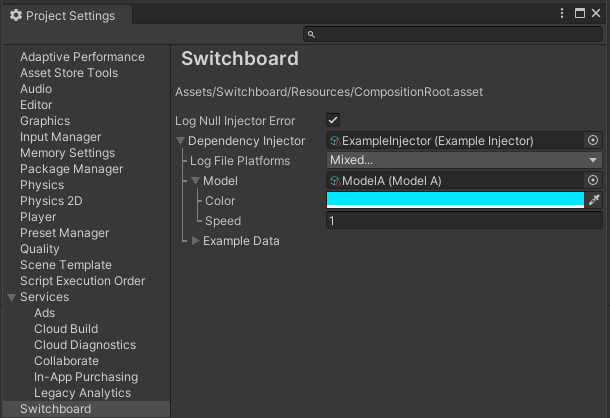

Installation & Basic Setup
Switchboard is available for download through the Unity Asset Store at https://assetstore.unity.com/packages/slug/250879.
- After importing Switchboard, open the Switchboard menu in the project settings window. This will automatically create a composition root asset located at Switchboard/Resources/CompositionRoot.asset. This asset is required by Switchboard at run time. The name of the file cannot be changed, but it can be relocated to any Resources directory.
- Assign a dependency injector asset to the composition root, or you may disable the "Log Null Injector Error" option to ignore dependency injection. An example dependency injector can be found in the Switchboard/Example/Assets/ directory.

Example
- Open the SwitchboardExample scene.
- Assign the example dependency injector asset, located at Switchboard/Example/Assets/, to the Dependency Injector field of the composition root asset, in the Switchboard project settings menu.
- Press play.
- See how the color and position of the example object are injected automatically with the model data assigned to the dependency injector.
- Change the color and properties of the model assigned to the dependency injector.
- See how the color and motion of the example object change in real time.
- Assign the other model asset, located at Switchboard/Example/Assets/, to the dependency injector. If ModelA is assigned, assign ModelB, or vice versa.
- Drag the ExamplePrefab from Switchboard/Example/Assets/ to the scene hierarchy.
- See how the color of the new object matches the color of the current model, but the object does not move. This is not a bug. The dependency injector began updating the original model when the application started playing. The new model was never told to update. It is still injected into new objects that request model data. The current color value can be retreived. Be aware of this potential when creating your own dependency injector. You may want to cache a reference to original data when the dependency injector activates, or make use of other designs, to prevent certain data from changing at run time. Note that the composition root already caches a reference to the original dependency injector when play begins. You are able to change the assigned dependency injector at run time because it is rendered with the expandable property drawer, but the composition root will remember which dependency injector was assigned from the start and use that one until the end.
- Stop play.
- See that the changes made to the dependency injector and model assets while playing still remain after stopping. Changes made while playing are not lost.
- Open the UnityEngine.Application.persistentDataPath directory for your project to view the generated log file.
Create a Dependency Injector
- The ExampleInjector class, located at Switchboard/Example/Scripts/, can be used as a starting point for creating your own dependency injector. The LogFileManager class simplifies the process of starting a log file in Unity. The ClockSynchronizer synchronizes the PreciseClock with the system clock so that log file time stamps are accurate. The ClockSynchronizer is updated by the ApplicationTicker. Both the LogFileManager and ClockSynchronizer are provided with source code, which can be seen in the Switchboard/Assemblies/Unity/ directory.
- Create a new C# script, or copy the ExampleInjector to create a new dependency injector class.
- Open the script and ensure the class derives from DependencyInjector. Remove any predefined MonoBehaviour methods.
- Add a CreateAssetMenu attribute similar to the example injector so that an instance can be created and added to the project. If you want the create option to be in the Switchboard directory, use the attribute arguments (menuName = "Switchboard/Your Injector Name Here", order = SwitchboardMenuOrder.Value).
- Override the Activation(), Deactivation(), and GetInstanceOf(Type) methods.
- The Activation() method will run when the application starts playing, before the first scene is fully loaded, before Awake(), OnEnable(), Start() or other methods are called on objects in the scene. You can create game objects and they will be added to the first scene that is loaded. However, it shouldn't usually be necessary to create game objects or MonoBehaviours. That's the whole reason for this framework exists!
- The Deactivation() method will be run when the application is quitting, but don't assume it is guaranteed. Don't assume that Deactivation() will run in all cases. If the application closes suddenly, it is possible that this method may not be invoked. However, this method is where everything that was spun up during Activation() can also be shut down gracefully when play is stopped in the editor.
- The GetInstanceOfType(Type) method provides an instance of the requested Type of object, if the dependency injector has been activated. This method will not be invoked until Activation() has occurred, prior to Deactivation(). The ExampleInjector class provides examples of how to handle type comparison. The Type argument will never be null, it will always be a reference type, and it can be compared for equality with a result of the typeof operator. Additionally, the IsAssignableFrom(Type) method can be invoked on the Type argument for a more flexible comparison of whether a certain type of object may be assigned to the requested type. The requested Type may be the exact Type of object in the injector, a base class in the same inheritance hierarchy, or an interface that it implements. If the object injected from the dependency injector can be assigned to the requested Type, IsAssignableFrom(Type) will tell you. If you want to restrict injection to only work with, for instance, an exact interface Type request then just compare for equality with a specific typeof() operator result.
TextMeshPro Integration
A TextMeshProExtensions class is included in the Switchboard/Example/Scripts/ directory. This class provides an extension method that enables easy assignment of a StringMaker to a TextMeshProUGUI text component. The extension method checks whether the text has actually changed to avoid re-creating geometry and other unnecessary operations, which provides a performance increase. Also, using a StringMaker to assign the text generates no new memory allocation for garbage collection. The script is included with the example code, with references to TextMeshPro commented out, so that Switchboard does not technically have a dependency on TextMeshPro. Simply uncomment the included method and move the script to a suitable location in your project to integrate StringMaker with TextMeshPro.